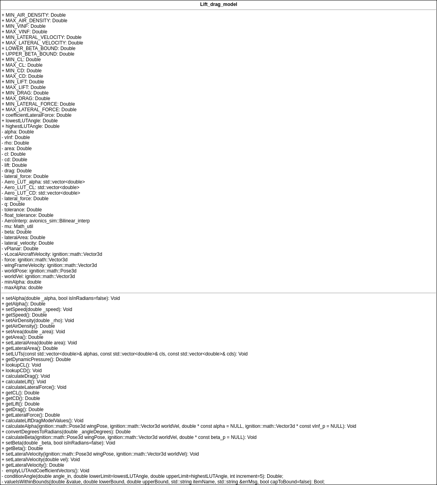

Introduction
The Lift Drag Model C++ class in the avionics_sim library calculates forces on an element (lift, drag, side slip drag) given a six dimensional world pose and three dimensional world velocity.
The mathematical model implemented by this class can be read about here, while the plugin that implements this class can be read about here.
How To Use
Initialize class
Initialize the class with values that should remain static during the simulation.
Values that should remain static are element area, element lateral area, lookup tables, forward vector, and upward vector. The lookup tables are presumed to be read in from a file into a comma delimited string before their values are interpolated. Once these values are set, calculate the port vector to complete initialization.
//Vectors for holding interpolation results for each LUT.
std::vector<double> LUT_Alpha, LUT_CL, LUT_CD;
//Sample area
double area = ...;
double lateral_area = ...;
//Set area
LiftDragModel.setArea(area);
//Set lateral area
LiftDragModel.setLateralArea(lateral_area);
//String containing example LUT values for alpha (in degrees)
std::string strLUTAlpha=...;
//String containing example LUT values for C_L
std::string strLUTCL=...;
//String containing example LUT values for C_D
std::string strLUTCD=...;
//Sample ignition Vector3D objects for upward and forward vectors.
ignition::math::Vector3d upward=...;
ignition::math::Vector3d forward=...;
//Using the Bilinear interpolation class in avionics_sim, obtain the interpolated values of LUT Alpha.
avionics_sim::Bilinear_interp::get1DLUTelementsFromString(strLUTAlpha, &LUT_Alpha);
//Using the Bilinear interpolation class in avionics_sim, obtain the interpolated values of LUT CL.
avionics_sim::Bilinear_interp::get1DLUTelementsFromString(strLUTCL, &LUT_CL);
//Using the Bilinear interpolation class in avionics_sim, obtain the interpolated values of LUT CD.
avionics_sim::Bilinear_interp::get1DLUTelementsFromString(strLUTCD, &LUT_CD);
//Initialize the model lookup tables with the interpolated values.
LiftDragModel.setLUTs(LUTalpha, LUTCL, LUTCD);
//Set the upward and forward vectors.
LiftDragModel.setUpwardVector(upward);
LiftDragModel.setUpwardVector(forward);
//Calculate the port vector
LiftDragModel.calculatePortVector();
Update values during simulation time step
Per time step, update the world velocity and pose, then calculate wind angles and velocities. If applicable, update velocities and angles according to cases of propeller wash and control surface. Then, calculate the resultant force by calling calculateLiftDragModelValues.
World velocity can be updated by calling setWorldVelocity and passing in a Vector3d object representing world velocity. World pose is updated by calling setWorldPose.
//Sample world velocity
ignition::math::Vector3d vel = ...;
// Sample world pose (with orientation in radians)
ignition::math::Pose3d pose = ...;
/*
Sample air density.
If this is fixed, consider setting this value
during initialization process instead.
*/
double rho = ...;
//Set air density
LiftDragModel.setAirDensity(rho);
//Set world velocity
LiftDragModel.setWorldVelocity(vel);
//Set pose.
LiftDragModel.setWorldPose(pose);
//Sample flag for indicating that there is prop wash
bool isPropWash=...;
//Sample flag for indicating that this is a control suface.
bool isControlSurface=...;
//Sample flag indicating whether or not to calculate forces as rotated.
bool calculateRotatedForces=...;
//Sample value for motor exit velocity
double motorExitVelocity=...;
//Sample propeller wash angle value (in this example, the value is presumed to be in radians)
double propellerWashAngle=...;
try
{
// Calcuate Angles and Velocities
LiftDragModel.calculateWindAnglesAndLocalVelocities();
/*
In this example, freestream velocity will be set to
motor exit velocity if there is a propeller wash and
the motor exit velocity exceeds the calculated
freestream velocity. The angle of attack (alpha)
will also be updated.
*/
if(isPropWash)
{
if (motorExitVelocity > LiftDragModel.getFreeStreamVelocity())
{
LiftDragModel.setFreeStreamVelocity(motorExitVelocity);
}
//Set the alpha under propwash to propellerWashAngle.
LiftDragModel.setAlpha(propellerWashAngle,true);
}
/*In this example, if this is a control surface,
set alpha from control surface deflection
angle in radians.
*/
if(isControlSurface)
{
double controlAngle = ...;
LiftDragModel.setAlpha(controlAngle, true);
}
// Set air density
LiftDragModel.setAirDensity(rho);
/*
Calculate Lift and Drag according to
aerodynamic element type.
This is determined by the flag isControlSurface
in this example.
*/
if (isControlSurface)
{
calculateRotatedForces=false;
}
else
{
calculateRotatedForces=true;
}
//Calculate resultant force.
LiftDragModel.calculateLiftDragModelValues(calculateRotatedForces);
}
catch (const Lift_drag_model_exception& e)
{
//Handle any exceptions thrown
}
Obtain resultant vector at end of time step
After calling calculateLiftDragModelValues, call getForceVector to obtain the resultant force.
// Obtain resultant force vector.
ignition::math::Vector3d force = LiftDragModel.getForceVector();
Calculation Steps
The lift drag model performs steps two through eight of the ten steps in the lift drag mathematical model.
Convert pose and world linear velocity into body velocity
This is done in the method calculateLocalVelocities by calling the CoordUtils class method project_vector_global.
calculateLocalVelocities implementation
World velocity and pose are passed into project_vector_global, as well as a reference to the object that will contain the body velocity values.
void Lift_drag_model::calculateLocalVelocities()
{
double vInLDPlane_s; // Scalar magnitude of speed in LD plane.
std::string exceptions="Lift_drag_model::calculateLocalVelocities:\n";
bool exceptionOccurred=false;
bool criticalExceptionOccurred=false;
ignition::math::Vector3d vWorldAircraftVelocity = ignition::math::Vector3d(worldVel.X(),
worldVel.Y(), worldVel.Z());
// Calculate world linear velocity in wing coordinate frame.
avionics_sim::Coordinate_Utils::project_vector_global(worldPose, vWorldAircraftVelocity,
&wingFrameVelocity);
//...
}
project_vector_global
Body velocity is computed using quaternions using the following equation from the lift drag mathematical model: $$ \begin{equation}V_{body}=(\mathbf F_w \cdot \mathbf V_{world}, \mathbf R_w \cdot \mathbf V_{world}, \mathbf U_w \cdot \mathbf V_{world}) \end{equation} $$
Implementation of body velocity calculation
int Coordinate_Utils::project_vector_global(ignition::math::Pose3d targetFrame,
ignition::math::Vector3d vec,
ignition::math::Vector3d * const res)
{
// Unit direction vectors in target (world) frame.
//Forward is positive on x-axis in world frame.
ignition::math::Vector3d forward(1.0, 0.0, 0.0);
//Upward is positive on z-axis in world frame.
ignition::math::Vector3d upward(0.0, 0.0, 1.0);
// Rotate into target frame to get direction unit vectors.
ignition::math::Vector3d forwardI = targetFrame.Rot().RotateVector(forward);
ignition::math::Vector3d upwardI = targetFrame.Rot().RotateVector(upward);
// Cross product to get right direction vector.
ignition::math::Vector3d rightI = upwardI.Cross(forwardI).Normalize();
// Project source vector into target frame.
*res = ignition::math::Vector3d(forwardI.Dot(vec),
rightI.Dot(vec),
upwardI.Dot(vec));
return 0;
}
Calculate aerodynamic parameters from the body velocity
The aerodynamic parameters $$\alpha, \beta, V_{\infty} , and V_{planar}$$ are calculated from the body velocity by calling the method calculateWindAnglesAndLocalVelocities, which in turn calls calculateLocalVelocities and calculateWindAngles.
calculateLocalVelocities logic implementation
This method calculates
$$ V_{\infty} \\ and \\ V_{planar} $$
as
$$ V_{\infty} = \sqrt{{{V_{body}}_x}^2 + {{V_{body}}_y}^2 + {{V_{body}}_z}^2} $$
and
$$ V_{planar} = \sqrt{{{V_{body}}_x}^2 + {{V_{body}}_z}^2} $$
and must be called be called before calculateWindAngles. This method also determines lateral velocity. Please see the Methods section for more information.
Implementation of freestream and planar velocity calculation
void Lift_drag_model::calculateLocalVelocities()
{
double vInLDPlane_s; // Scalar magnitude of speed in LD plane.
std::string exceptions="Lift_drag_model::calculateLocalVelocities:\n";
bool exceptionOccurred=false;
bool criticalExceptionOccurred=false;
ignition::math::Vector3d vWorldAircraftVelocity = ignition::math::Vector3d(worldVel.X(),
worldVel.Y(), worldVel.Z());
// Calculate world linear velocity in wing coordinate frame.
avionics_sim::Coordinate_Utils::project_vector_global(worldPose, vWorldAircraftVelocity,
&wingFrameVelocity);
vInFreestreamPlane_v = ignition::math::Vector3d(wingFrameVelocity.X(),
wingFrameVelocity.Y(), wingFrameVelocity.Z());
double vInFreestream_s = vInFreestreamPlane_v.Length();
// Remove spanwise and vertical component
vInLDPlane_v = ignition::math::Vector3d(wingFrameVelocity.X(),
0, wingFrameVelocity.Z());
vInLDPlane_s = vInLDPlane_v.Length(); // Calculate scalar
// ...
}
calculateWindAngles logic implementation
This method calculates the angles $$\alpha \ and \ \beta$$
as
$$ \begin{equation}\alpha = \frac{-u}{w}\end{equation} $$
and
$$ \begin{equation}\beta = arcsin(\frac{-v}{V_{\infty}})\end{equation} $$
where
$$ u={{V_{body}}_x}\cdot\vec{u}_{fwd} \\ v={{V_{body}}_y}\cdot\vec{u}_{lat} \\ w={{V_{body}}_z}\cdot\vec{u}_{up} $$
where
$$ \vec{u}_{lat} = {\vec{u}_{up}}\times{\vec{u}_{fwd}} $$
Implementation of wind angle calculation
void Lift_drag_model::calculateWindAngles()
{
bool exceptionOccurred=false;
bool criticalExceptionOccurred=false;
std::string exceptions="Lift_drag_model::calculateWindAngles:\n";
//Calculate velocity in each direction.
double u = vecUpwd.Dot(wingFrameVelocity);
double v = vecPort.Dot(wingFrameVelocity);
double w = vecFwd.Dot(wingFrameVelocity);
// Calculate alpha
double y=-u;
double x=w;
errno = 0;
alpha = atan2(y,x);
//...
//Calculate beta
y=-v;
beta = asin(y/vInf);
//...
}
Calculate dynamic pressure
Dynamic pressure is calculated as a function of planar velocity in the method calculateDynamicPressure:
$$ q_{planar} = \frac{1}{2}\rho V_{planar}^2 $$
Implementation of dynamic pressure calculation
void Lift_drag_model::calculateDynamicPressure()
{
q=0.5*rho*vInf*vInf;
}
Utilize lookup table and linear interpolation to extract coefficients of lift and drag as a function of angle of attack (alpha)
Once the lookup tables have been set by the plugin and alpha has been calculated, the methods lookupCL and lookupCD are used respectively to obtain the coefficients of lift and drag from the lookup tables. Each function uses linear interpolation to obtain the coefficient value.
lookupCL logic implementation
Given the alpha and CL LUTs and an angle, retrieve the lift coefficient and store it in model variable cl. This value can be retrieved using the method getCL.
Implementation of coefficient of lift interpolation
void Lift_drag_model::lookupCL()
{
AeroInterp.interpolate(Aero_LUT_alpha,Aero_LUT_CL, alpha, &cl);
//...
}
lookupCD logic implementation
Given the alpha and CD LUTs and an angle, retrieve the drag coefficient and store it in model variable cd. The final value of cd is calculated one of two ways depending on whether the model is being applied to a control surface (see implementation). This value can be retrieved using the method getCD.
Implementation of coefficient of drag interpolation
void Lift_drag_model::lookupCD()
{
if (isControlSurface)
{
double cdAtAlphaZero;
//Now, we subtract cd @ alpha=0 from the one obtained at alpha iff alpha not zero.
AeroInterp.interpolate(Aero_LUT_alpha,Aero_LUT_CD, alpha, &cd);
AeroInterp.interpolate(Aero_LUT_alpha,Aero_LUT_CD, 0, &cdAtAlphaZero);
cd=cd-cdAtAlphaZero;
}
else
{
AeroInterp.interpolate(Aero_LUT_alpha,Aero_LUT_CD, alpha, &cd);
}
}
Calculate lift and drag force scalar quantities
This is done in the method calculateLiftDragModelValues by calling calculateLift and calculateDrag.
calculateLift
The lift scalar value is calculated according to the following equation in the mathematical model.
$$ \begin{equation}L = C_LqA\end{equation} $$
Implementation of coefficient of scalar lift calculation
void Lift_drag_model::calculateLift()
{
lift=cl*q*getArea();
//...
}
calculateDrag
The drag scalar value is calculated similarly:.
$$ \begin{equation}L = C_DqA\end{equation} $$
Implementation of coefficient of scalar drag calculation
void Lift_drag_model::calculateDrag()
{
drag=cd*q*getArea();
//...
}
Calculate drag due to side slip
This is through the calculateLateralForce method in calculateLiftDragModelValues using the equation
$$ D_{ss} = C_{D_{ss}}q_{ss}A_{lat} $$
where
$$ C_{D_{ss}}\ is \ coefficient \ of \ side \ slip \ drag \ $$
$$ A_{lat}\ is \ lateral \ area \ of \ element \ $$
$$ q_{ss} = \frac{1}{2} \rho {{V_{body}}_y}^2 $$
Implementation of coefficient of side slip drag calculation
void Lift_drag_model::calculateLateralForce()
{
double q_lat=0.5*rho*lateral_velocity*lateral_velocity;
lateral_force=q_lat*coefficientLateralForce*getLateralArea();
//...
}
Convert scalar force lift, drag, and sideslip drag representations from wind frame into body-fixed coordinate system
If the lift drag model is not being applied to a control surface, lift and drag must be converted into their rotated values. Conversion occurs in the method calculateRotatedLiftAndDrag.
calculateRotatedLiftAndDrag
Rotated lift and drag are calculated as follows:
$$ F_{up} = L*cos(\alpha) + D*sin(\alpha) $$
$$ F_{fwd} = L*sin(\alpha) - D*cos(\alpha) $$
Implementation of lift and drag rotation
void Lift_drag_model::calculateRotatedLiftAndDrag()
{
double alphaInRadians=convertDegreesToRadians(alpha);
double rotated_lift = (lift*cos(alphaInRadians))+(drag*sin(alphaInRadians));
double rotated_drag = (lift*sin(alphaInRadians))-(drag*cos(alphaInRadians));
lift=rotated_lift;
drag=rotated_drag;
}
Convert scalar body force representation into a three element vector representation in body frame
For the calculation of the final resultant force in body-fixed coordinate frame, convert the scalar force quantities into the appropriate directions in body-fixed coordinate frame.
This is done in the method calculateForceWithDirection.
calculateLiftDragModelValues
The final resultant force is calculated as follows:
$$ F_R = (F_{up} * \vec{u}_{up}) + (F_{fwd} * \vec{u}_{fwd}) + (F_{lat} * \vec{u}_{lat}) $$
An extra step is performed to get the direction of drag.
Implementation of scalar body force conversion into three element vector
void Lift_drag_model::calculateForceWithDirection(bool calculatedRotatedForces)
{
// Get direction of lift by multiplying lift by upward vector.
liftVec = lift * vecUpwd;
/* Get direction of drag. This should be in the opposite direction of velocity.
If the drag has been calculated as rotated, do not take -vecFwd as direction of drag,
as this has been factored in by the rotation. Otherwise, use -vecFwd to get direction of drag.
*/
if (!calculatedRotatedForces)
{
dragVec = drag * -vecFwd;
}
else
{
dragVec = drag * vecFwd;
}
//Get direction of lateral force.
lateralForceVec = lateral_force * vecPort;
//Add the forces together. All variables are of type ignition::math::Vector3d.
force = liftVec + lateralForceVec + dragVec;
//Correct any NaN values.
force.Correct();
}
Methods
Public
setAlpha
Sets value of alpha.
void setAlpha(double _alpha, bool isInRadians=false);
Return Type
void
Input Parameters
| Parameter | Default | Description |
|---|---|---|
| _alpha | N/A | Value of alpha angle. |
| isInRadians | false | If set to false, the value is presumed to be in degrees. |
getAlpha
Returns value of alpha in degrees.
double getAlpha();
Return Type
double
Input Parameters
None
setFreeStreamVelocity
Sets value of freestream velocity.
void setFreeStreamVelocity(double _fsVel, bool overridePlanarAndFreestream=false);
Return Type
void
Input Parameters
| Parameter | Default | Description |
|---|---|---|
| _speed | N/A | Value of freestream velocity. |
| overridePlanarAndFreestream | false | If set to true, the planar velocity will also be replaced by _speed. |
getFreeStreamVelocity
Returns value of freestream velocity.
double getFreeStreamVelocity();
Return Type
double
Input Parameters
None
getFreeStreamVelocityVec
Returns value of freestream velocity as a vector.
ignition::math::Vector3d getFreeStreamVelocityVec();
Return Type
ignition::math::Vector3d
Input Parameters
None
setPlanarVelocity
Sets value of planar velocity.
void setPlanarVelocity(double _planarVel);
Return Type
void
Input Parameters
| Parameter | Default | Description |
|---|---|---|
| _planarVel | N/A | Value of planar velocity. |
getPlanarVelocity
Returns value of planar velocity.
double getFreeStreamVelocity();
Return Type
double
Input Parameters
None
getPlanarVelocityVec
Returns value of planar velocity as a vector.
ignition::math::Vector3d getPlanarVelocityVec();
Return Type
ignition::math::Vector3d
Input Parameters
None
setAirDensity
Sets value of planar velocity.
void setAirDensity(double _rho);
Return Type
void
Input Parameters
| Parameter | Default | Description |
|---|---|---|
| _rho | N/A | Value for air density (rho). |
getAirDensity
Returns value of air density.
double getAirDensity();
Return Type
double
Input Parameters
None
setArea
Sets value of surface area.
void setArea(double _area);
Return Type
void
Input Parameters
| Parameter | Default | Description |
|---|---|---|
| _area | N/A | Value for surface area. |
getArea
Returns value of area
double getArea();
Return Type
double
Input Parameters
None
setLateralArea
Sets value of lateral surface area.
void setLateralArea(double area);
Return Type
void
Input Parameters
| Parameter | Default | Description |
|---|---|---|
| area | N/A | Value for lateral surface area. |
getLateralArea
Returns value of area
double getLateralArea();
Return Type
double
Input Parameters
None
setLUTs
Sets value of CL, CD, and Alpha look up tables.
void setLUTs(const std::vector<double>& alphas,
const std::vector<double>& cls,
const std::vector<double>& cds);
Return Type
void
Input Parameters
| Parameter | Default | Description |
|---|---|---|
| alphas | N/A | Reference to vector containing alpha values. |
| cls | N/A | Reference to vector containing lift coefficient values. |
| cds | N/A | Reference to vector containing drag coefficient values. |
calculateDynamicPressure
Calculates dynamic pressure (q).
void calculateDynamicPressure();
Return Type
void
Input Parameters
N/A
getDynamicPressure
Returns value of dynamic pressure (q).
double getDynamicPressure();
Return Type
double
Input Parameters
None
lookupCL
Calculate/retrieve coefficient of lift from LUTs.
void lookupCL();
Return Type
void
Input Parameters
N/A
lookupCD
Calculate/retrieve coefficient of drag from LUTs.
void lookupCD();
Return Type
void
Input Parameters
N/A
calculateDrag
Calculates value of drag.
void calculateDrag();
Return Type
void
Input Parameters
N/A
calculateLift
Calculates value of lift.
void calculateLift();
Return Type
void
Input Parameters
N/A
calculateLateralForce
Calculates lateral force.
void calculateLateralForce();
Return Type
void
Input Parameters
N/A
getCL
Returns value of lift coefficient.
double getCL();
Return Type
double
Input Parameters
N/A
getCD
Returns value of drag coefficient.
double getCD();
Return Type
double
Input Parameters
N/A
getLift
Returns scalar value of lift.
double getLift();
Return Type
double
Input Parameters
N/A
getDrag
Returns scalar value of drag.
double getDrag();
Return Type
double
Input Parameters
N/A
getLateralForce
Returns scalar value of lateral force.
double getLateralForce();
Return Type
double
Input Parameters
N/A
calculateLiftDragModelValues
Calculates important output values of the model (cl, cd, forces).
void calculateLiftDragModelValues(bool calculateRotatedForces=true);
Return Type
void
Input Parameters
| Parameter | Default | Description |
|---|---|---|
| calculateRotatedForces | true | If true, lift and drag forces will be calculated as rotated. |
convertDegreesToRadians
Returns value of angle in radians.
double convertDegreesToRadians(double _angleDegrees);
Return Type
double
Input Parameters
| Parameter | Default | Description |
|---|---|---|
| _angleDegrees | N/A | Value of angle in degrees |
convertRadiansToDegrees
Returns value of angle in degrees.
double convertDegreesToRadians(double _angleDegrees);
Return Type
double
Input Parameters
| Parameter | Default | Description |
|---|---|---|
| _angleRadians | N/A | Value of angle in radians |
setBeta
Sets value of beta.
void setBeta(double _beta, bool isInRadians=false);
Return Type
void
Input Parameters
| Parameter | Default | Description |
|---|---|---|
| _beta | N/A | Value of beta angle. |
| isInRadians | false | If set to false, the value is presumed to be in degrees. |
getBeta
Returns value of beta (side slip angle)
double getBeta();
Return Type
double
Input Parameters
None
setLateralVelocity
Sets value of lateral velocity using pose and world velocity to calculate value.
void setLateralVelocity(ignition::math::Pose3d wingPose, ignition::math::Vector3d worldVel);
Return Type
void
Input Parameters
| Parameter | Default | Description |
|---|---|---|
| wingPose | N/A | World pose. |
| worldVel | N/A | World linear velocity. |
setLateralVelocity
Sets value of lateral velocity to a specified value.
void setLateralVelocity(double vel);
Return Type
void
Input Parameters
| Parameter | Default | Description |
|---|---|---|
| vel | N/A | A chosen lateral velocity. |
getLateralVelocity
Returns value of current lateral velocity.
double getLateralVelocity();
Return Type
double
Input Parameters
None
getLocalAircraftVelocity
Returns value of local aircraft velocity as a vector.
ignition::math::Vector3d getLocalAircraftVelocity();
Return Type
ignition::math::Vector3d
Input Parameters
None
getForceVector
Returns resultant force.
ignition::math::Vector3d getForceVector();
Return Type
ignition::math::Vector3d
Input Parameters
None
setWorldPose
Sets world pose.
void setWorldPose(ignition::math::Pose3d pose);
Return Type
void
Input Parameters
| Parameter | Default | Description |
|---|---|---|
| pose | N/A | World pose, as obtained by Gazebo or other source. |
getWorldPose
Returns value of world pose.
ignition::math::Pose3d getWorldPose();
Return Type
ignition::math::Pose3d
Input Parameters
None
setWorldVelocity
Sets world velocity.
void setWorldVelocity(ignition::math::Vector3d vel);
Return Type
void
Input Parameters
| Parameter | Default | Description |
|---|---|---|
| vel | N/A | World linear velocity, as obtained by Gazebo or other source. |
getWorldVelocity
Returns value of world linear velocity.
ignition::math::Vector3d getWorldVelocity();
Return Type
ignition::math::Vector3d
Input Parameters
None
calculateWindAnglesAndLocalVelocities
Calls both calculateLocalVelocities and calculateWindAngles as one wrapper function.
void calculateWindAnglesAndLocalVelocities();
Return Type
void
Input Parameters
None
calculateLocalVelocities
Calculates local velocities.
void calculateWindAngles();
Return Type
void
Input Parameters
None
calculateWindAngles
Calculates alpha and beta angles from wing pose and world velocity.
void calculateWindAngles();
Return Type
void
Input Parameters
None
setForwardVector
Set forward unit vector.
void setForwardVector(ignition::math::Vector3d fwd);
Return Type
void
Input Parameters
| Parameter | Default | Description |
|---|---|---|
| fwd | N/A | Forward unit vector |
getForwardVector
Get forward unit vector.
ignition::math::Vector3d getForwardVector();
Return Type
ignition::math::Vector3d
Input Parameters
None
setUpwardVector
Set upward unit vector.
void setUpwardVector(ignition::math::Vector3d upward);
Return Type
void
Input Parameters
| Parameter | Default | Description |
|---|---|---|
| upward | N/A | Upward unit vector |
getUpwardVector
Get upward unit vector.
ignition::math::Vector3d getUpwardVector();
Return Type
ignition::math::Vector3d
Input Parameters
None
setPortVector
Set port unit vector.
void setPortVector(ignition::math::Vector3d port);
Return Type
void
Input Parameters
| Parameter | Default | Description |
|---|---|---|
| port | N/A | Upward unit vector |
calculatePortVector
Calculate port vector as cross product of forward and upward.
void calculatePortVector();
Return Type
void
Input Parameters
None
getPortVector
Get port unit vector.
ignition::math::Vector3d getPortVector();
Return Type
ignition::math::Vector3d
Input Parameters
None
getLUTAlpha
Get alpha LUT.
std::vector<double> getLUTAlpha();
Return Type
std::vector of type double.
Input Parameters
None
getLUTCL
Get CL LUT.
std::vector<double> getLUTCL();
Return Type
std::vector of type double.
Input Parameters
None
getLUTCD
Get CD LUT.
std::vector<double> getLUTCD());
Return Type
std::vector of type double.
Input Parameters
None
Private
emptyLUTAndCoefficientVectors
Make empty the the LUT, CL, and CD vectors.
void emptyLUTAndCoefficientVectors();
Return Type
None
Input Parameters
None
conditionAngle
Conditions any angle outside of (-lowerBound, upperBound) to be within that range. Presumes that angle is in degrees.
double conditionAngle(double angle_in,
double lowerLimit=lowestLUTAngle,
double upperLimit=highestLUTAngle,
int increment=5);
Return Type
double
Input Parameters
| Parameter | Default | Description |
|---|---|---|
| angle_in | N/A | Angle to condition. |
| lowerLimit | lowestLUTAngle | Lower bound of condition range (lowest acceptable value) |
| upperLimit | highestLUTAngle | Upper bound of condition range (lowest acceptable value) |
| increment | 5 | Amount to increment in conditioning process. |
valueIsWithinBounds
Function to check if a given value is within a given bound.
bool valueIsWithinBounds(double &value,
double lowerBound,
double upperBound,
std::string itemName,
std::string &errMsg, bool capToBound=false);
Return Type
bool
Input Parameters
| Parameter | Default | Description |
|---|---|---|
| value | N/A | Reference to value to check. |
| lowerBound | N/A | Lower bound of condition range |
| upperBound | N/A | Upper bound of condition range |
| itemName | N/A | Name of variable containing value to check |
| errMsg | N/A | Error message to be populated if and only value is not within bounds. |
| capToBound | N/A | If true, value will be set to upperBound value (if exceeding it) or lowerBound (if below it) |
calculateRotatedLiftAndDrag
Calculate rotated force magnitudes.
void calculateRotatedLiftAndDrag();
Return Type
void
Input Parameters
None
calculateForceWithDirection
Calculate force vector with direction.
void calculateForceWithDirection(bool calculatedRotatedForces);
Return Type
void
Input Parameters
| Parameter | Default | Description |
|---|---|---|
| calculatedRotatedForces | N/A | If true, do not calculate drag direction with the negative value of the forward unit vector. |
Members
Public
MIN_AIR_DENSITY
Minimum acceptable air density.
constexpr static double MIN_AIR_DENSITY=0.9;
Type
double
MAX_AIR_DENSITY
Maximum acceptable air density.
constexpr static double MAX_AIR_DENSITY=1.3;
Type
double
MIN_VINF
Minimum acceptable freestream velocity
constexpr static double MIN_VINF=0.0;
Type
double
MAX_VINF
Maximum acceptable freestream velocity
constexpr static double MAX_VINF=100.0;
Type
double
MAX_LATERAL_VELOCITY
Maximum acceptable lateral velocity
constexpr static double MAX_LATERAL_VELOCITY=50.0;
Type
double
MIN_LATERAL_VELOCITY
Minimum acceptable lateral velocity
constexpr static double MIN_LATERAL_VELOCITY=-MAX_LATERAL_VELOCITY;
Type
double
Type
double
MIN_CL
Minimum acceptable coefficient of lift (CL).
constexpr static double MIN_CL=-1.5;
Type
double
MAX_CL
Maximum acceptable coefficient of lift (CL).
constexpr static double MAX_CL=1.4;
Type
double
MIN_CD
Minimum acceptable coefficient of drag (CD).
constexpr static double MIN_CD=0.0;
Type
double
MAX_CD
Maximum acceptable coefficient of drag (CD).
constexpr static double MAX_CD=2.0;
Type
double
MIN_LIFT
Minimum acceptable value for lift scalar.
constexpr static double MIN_LIFT=0.0;
Type
double
MAX_LIFT
Maximum acceptable value for lift scalar.
constexpr static double MAX_LIFT=200.0;
Type
double
MIN_DRAG
Minimum acceptable value for drag scalar.
constexpr static double MIN_DRAG=0.0;
Type
double
MAX_DRAG
Maximum acceptable value for drag scalar.
constexpr static double MAX_DRAG=100.0;
Type
double
MIN_LATERAL_FORCE
Minimum lateral force
constexpr static double MIN_LATERAL_FORCE=-796.25;
Type
double
MAX_LATERAL_FORCE
Maximum acceptable value for lateral force.
constexpr static double MAX_LATERAL_FORCE=796.25;
Type
double
coefficientLateralForce
Coefficient of lateral force
constexpr static double coefficientLateralForce=0.2;
Type
double
lowestLUTAngle
Lowest possible value in alpha LUT
constexpr static int lowestLUTAngle=-180;
Type
double
highestLUTAngle
Highest possible value in alpha LUT
constexpr static int highestLUTAngle=180;
Type
double
Private
alpha
Value of alpha (angle of attack)
double alpha;
Type
double
vInf
Aircraft freestream velocity (v infinity)
double vInf;
Type
double
vPlanar
Planar body velocity (v infinity)
double vPlanar;
Type
double
rho
Value of rho
double rho;
Type
double
area
Value of area
double area;
Type
double
cl
Lift coefficient
double cl;
Type
double
cd
Drag coefficient
double cd;
Type
double
lift
Scalar value for lift
double lift;
Type
double
drag
Scalar value for drag
double drag;
Type
double
lateral_force
Scalar value for lateral force
double lateral_force;
Type
double
Aero_LUT_alpha
alpha LUT
std::vector<double> Aero_LUT_alpha;
Type
std::vector of type double
Aero_LUT_CL
Lift coefficient LUT
std::vector<double> Aero_LUT_CL;
Type
std::vector of type double
Aero_LUT_CD
Drag coefficient LUT
std::vector<double> Aero_LUT_CD;
Type
std::vector of type double
q
Dynamic pressure
double q;
Type
double
tolerance
Tolerance for floating point comparisons (double)
constexpr static double tolerance=0.0001;
Type
double
floatTolerance
Tolerance for floating point comparisons (float)
constexpr static double tolerance=0.0001;
Type
double
AeroInterp
Bilinear interpolator instance
avionics_sim::Bilinear_interp AeroInterp;
Type
avionics_sim::Bilinear_interp
mu
Math utility object (used for floating point comparison, display of digits to a certain precision)
Math_util mu;
Type
Math_util
beta
Value of beta (side slip angle)
double beta;
Type
double
lateralArea
Lateral area of aircraft
double lateralArea;
Type
double
lateral_velocity
Y component of wingframe (body) velocity. Used in calculating lateral force
double lateral_velocity;
Type
double
Reference Diagrams
Lift Drag Model UML Class
